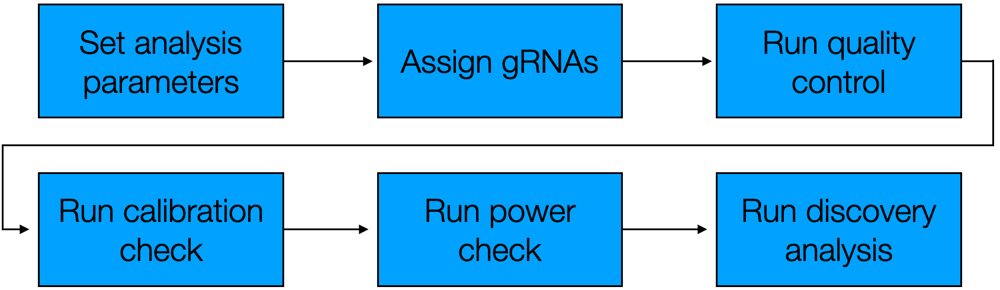

Part II of this book describes how to apply sceptre to analyze large-scale single-cell CRISPR screen data. Part II is somewhat more advanced than Part I. Ideally, readers will have intermediate bioinformatics experience, including familiarity with basic Linux commands and facility with submitting and monitoring jobs on a cluster. Knowledge of Nextflow (or some similar workflow management tool) is helpful not required.
In this chapter we describe how to use sceptre to analyze large-scale single-cell CRISPR screen data. We also introduce the companion package ondisc, which provides facilities for out-of-core and distributed computing on single-cell data. Users can leverage sceptre and ondisc to analyze their data in one of two ways. First, users can analyze their data out-of-core on a laptop or desktop within the R console. This solution is most appropriate when the data are too big to fit into memory but the number of target-response pairs to be analyzed is not too large. Second, users can distribute their analysis across tens or even hundreds of processors on a computing cluster via the sceptre Nextflow pipeline. This solution is most appropriate when the data are big and a large number of pairs is to be analyzed.
The schematic below illustrates the two at-scale interfaces to sceptre. The first step is the same regardless of whether one plans to analyze the data within the R console or via the Nextflow pipeline: one imports the data into an ondisc-backed sceptre_object, which is a special kind of sceptre_object in which the response and gRNA count matrices are stored on-disk rather than in memory. If one plans to analyze the data entirely within the R console, then one proceeds in the manner as described in Section 1 — Section 8 of The whole game, calling the standard pipeline functions (i.e., assign_grnas(), run_qc(), etc.) on the ondisc-backed sceptre_object one-by-one. If, one the other hand, one plans to analyze the data via the Nextflow pipeline, then one proceeds through a slightly more involved (though still straightforward) sequence of steps. Part II of the book focuses on the Nextflow interface (but see Section 9.3 for a discussion of analyzing an ondisc-backed sceptre_object within the R console).
The two at-scale interfaces to sceptre. Users can analyze their data in the R console using the standard pipeline functions or on the command line using the Nextflow pipeline. In both cases users first import their data into an ondisc-backed sceptre_object, which is a kind of sceptre_object that stores the response and gRNA expression matrices on disk (as opposed to in memory).
ondisc is an R package for large-scale computing on single-cell data, with a special focus on single-cell CRISPR screen analysis. ondisc implements several novel algorithms and data structures for efficiently manipulating and querying large single-cell expression matrices. ondisc is implemented as a lightweight layer of abstraction on top of the popular HDF5 database system. Expression matrices within ondisc are stored on-disk in the custom .odm file format, which is an HDF5 file with special structure. ondisc enables fast, out-of-core access to the rows of a feature-by-cell expression matrix. (Thus, loading the expression vector of a given feature into memory is fast.)
We use the high-MOI CRISPRi data that ship with sceptre as a running example in this chapter. We note that the example high-MOI CRISPRi data are fairly small; typically, we would leverage the at-scale interface to sceptre when the data are large (e.g., >10 gigabytes). We describe each step of the Nextflow-based pipeline below, with one section per step. The title of each section indicates whether the step is to be carried out on a local machine (“local machine”) or on a cluster (“cluster”). By “local machine,” we mean a laptop or a desktop, and by “cluster,” we mean a computing cluster or a cloud.
Software installation
The examples in this chapter depend on several software packages. First, users should install ondisc onto their local machine. ondisc has the Bioconductor dependency Rhdf5lib, which we recommend downloading and installing from source (before installing ondisc).
R, local
# install.packages("BiocManager")BiocManager::install("Rhdf5lib", type ="source")# Rhdf5libdevtools::install_github("timothy-barry/ondisc")# ondisc
Next, users should install both sceptre and ondisc onto their cluster.
R, cluster
devtools::install_github("katsevich-lab/sceptre")# sceptre# install.packages("BiocManager")BiocManager::install("Rhdf5lib", type ="source")# Rhdf5libdevtools::install_github("timothy-barry/ondisc")# ondisc
Finally, users should install Nextflow onto their local machine and their cluster. Instructions for installing Nextflow are available in the addendum to Part II of the book (Section 9.1).
7.1 Import data into an ondisc-backed sceptre object (local machine)
The first step is to import the data into an ondisc-backed sceptre object. To import data outputted by one or more calls to cellranger count, we call the function import_data_from_cellranger(), setting the argument use_ondisc to TRUE. Additionally, we set directory_to_write to a string indicating the directory in which to write the backing .odm files, which are the files that will contain the gene and gRNA expression matrices. In the example below we set directory_to_write to "~/sceptre_data", although any valid file path will do. Finally, we set moi to the MOI of the dataset, grna_target_data_frame to the gRNA target data frame, and directories to the set of directories outputted by one or more calls to cellranger count. (The latter three arguments were described in depth in Section 1 of The whole game.)
library(sceptre)library(sceptredata)# set the argumentsdirectories<-paste0(system.file("extdata", package ="sceptredata"),"/highmoi_example/gem_group_", 1:2)data(grna_target_data_frame_highmoi)directory_to_write<-"~/sceptre_data"
# call the data import functionsceptre_object<-import_data_from_cellranger( directories =directories, moi ="high", grna_target_data_frame =grna_target_data_frame_highmoi, use_ondisc =TRUE, directory_to_write =directory_to_write)
import_data_from_cellranger() (with use_ondisc set to TRUE) converts the inputted .mtx files into .odm files, with one .odm file generated per modality. The .odm files contain the same information as the .mtx files, but the data are stored in a much more efficient format for single-cell CRISPR screen analysis. Additionally, import_data_from_cellranger() computes the cell-specific covariates (e.g., response_n_umis, response_p_mito, batch, etc.). Importantly, import_data_from_cellranger() uses only a few gigabytes of memory, even when the input data are tens of gigabytes in size.
Calling list.files() on directory_to_write shows that two files have been created in this directory: gene.odm, the file storing the gene expression matrix, and grna.odm, the file storing the gRNA expression matrix.
Users alternately can create an ondisc-backed sceptre_object from a collection of R objects by calling import_data(), setting use_ondisc to TRUE. (See ?import_data() and Section 1.5 for more information.) We recommend calling import_data_from_cellranger() in place of import_data() when possible, as the former can handle arbitrarily large matrices and is more memory-efficient, while the latter only can handle matrices that contain fewer than ~2.1 billion nonzero entries.
7.2 Explore the data (local machine)
The next step — which is optional but generally helpful — is to explore the data within the R console. There are three relevant functions in this context: get_cell_covariates(), get_response_matrix(), and get_grna_matrix(). get_cell_covariates() returns the cell-specific covariates that were computed as part of the data import step.
response_matrix is an object of class odm, which is an integer-valued expression matrix backed by an .odm file. Evaluating response_matrix in the console prints the number of features and cells contained within the matrix, as well as the file path to the backing .odm file. The “Backing file” field is machine-specific.
response_matrix
An object of class odm with the following attributes:
• 526 features
• 45919 cells
• Backing file: /Users/tib163/sceptre_data/gene.odm
odm objects support many of the key operators that standard R matrices support. For example, one can obtain the feature IDs of an odm object by calling rownames().
Additionally, one can use the bracket operator (i.e, [, ]) to load a given row of the expression matrix into memory. For example, response_matrix["ENSG00000069275",] loads the expression vector corresponding to the gene “ENSG00000069275” into memory.
odm objects take up very little space, as the expression data are stored on disk rather than in memory. For example, response_matrix takes up only 40 kilobytes (or 0.04 megabytes) of memory.
The third step is to set the analysis parameters. We proceed more or less exactly as described in Section 2 of The whole game. We seek to conduct a trans analysis of the high-MOI CRISPRi data. Hence, we construct the positive control and discovery pairs using the functions construct_positive_control_pairs() and construct_trans_pairs(), respectively.
Next, we set the analysis parameters via a call to set_analysis_parameters(). We set resampling_mechanism to "permutations" (as opposed to the default of "crt" in high-MOI), as "permutations" currently is the only option available for resampling_mechanism for an ondisc-backed sceptre_object. Additionally, we set side to "both" to conduct a two-tailed test, as we do not have a strong prior as to whether the perturbations will lead to an increase or decrease in the expression of the genes in trans.
This step is optional; users instead can specify the analysis parameters on the command line as arguments to the Nextflow pipeline.
Tip
The standard interface to the sceptre Nextflow pipeline is designed to handle up to 10 million pairs (which is quite a large analysis!). Users interested in analyzing more than 10 million pairs (in particular, in the context of a massive-scale trans analysis) should consult Section 8.4.
7.4 Write the ondisc-backed sceptre_object to disk (local machine)
The next step is to write the ondisc-backed sceptre_object to disk. To this end, we call the function write_ondisc_backed_sceptre_object(), passing sceptre_object and directory_to_write as arguments. The sceptre_object is saved within directory_to_write as sceptre_object.rds. directory_to_write can be any directory.
7.5 Call the trial Nextflow pipeline (local machine)
The next step is to invoke the Nextflow pipeline on the local machine to analyze a small subset of the data. This small-scale analysis — which we call a “trial” analysis — enables us to verify that the pipeline is in working order. A Nextflow launch script for the example high-MOI data is as follows.
We will describe the structure of this launch script in detail shortly. For the time being, note that the --trial flag on the last line tells Nextflow to run the trial pipeline as opposed to the full-scale pipeline. Users can copy and paste the above script into a file called launch_script.sh. Alternately, users can access launch_script.sh by git cloning the sceptre-pipeline directory and then changing directories into the examples subdirectory, as follows.
terminal
git clone git@github.com:timothy-barry/sceptre-pipeline.git
cd sceptre-pipeline/examples
We run the pipeline by calling bash on launch_script.sh:
If the pipeline runs correctly, the terminal output looks something like the following.
Nextflow output for the trial pipeline on a local machine.
The results of the pipeline are stored in ~/sceptre_outputs. Calling list.files on ~/sceptre_outputs shows that the directory contains all of the standard sceptre outputs, including the analysis summary text file (analysis_summary.txt), the plot files (e.g., plot_assign_grnas.png, etc.), and the result files (e.g., results_run_discovery_analysis.rds, etc.).
An inspection of analysis_summary.txt indicates that 97 negative control pairs and 97 discovery pairs were analyzed. The trial Nextflow pipeline randomly samples 100 pairs from the discovery set, 100 pairs from the negative control set, and 100 pairs from the positive control set and subjects these pairs to analysis. (Some of the pairs may be filtered out by pairwise QC. Moreover, if any of the sets contains fewer than 100 pairs, then that entire set of pairs is analyzed.) If the trial pipeline runs without issue, one can proceed to the next step.
Tip
The trial pipeline is purely for computational purposes. Statistical performance in the context of the trial pipeline is not necessarily reflective of statistical performance in the context of the full-scale pipeline.
7.6 Push the data to the cluster
The next step is to push the data to the cluster. The following block of code creates a directory ~/sceptre_data on the cluster. It then copies the contents of ~/sceptre_data (on the local machine) into ~/sceptre_data (on the cluster). The strings “username” and “cluster_address” should be replaced by one’s username and cluster address, respectively.
We optionally can load and explore the data on the cluster. The function read_ondisc_backed_sceptre_object() loads an ondisc-backed sceptre_object, taking sceptre_object_fp (i.e., the file path to sceptre_object.rds), response_odm_file_fp (i.e., the file path to the response .odm file), and grna_odm_file_fp (i.e., the file path to the gRNA .odm file) as arguments. We briefly explore the sceptre_object to verify that looks the same on the cluster as on the local machine.
We saved the example data to the home directory for convenience. On most clusters there is a dedicated “data” directory. Best practices dictate that users store their data in the dedicated data directory, especially when the data are large.
Note
The first six steps of the Nextflow-based pipeline (i.e., Section 7.1 – Section 7.6) can be carried out entirely on the cluster, bypassing the local machine. If the output directories from cellranger count are stored on the cluster, the user can import the data into an ondisc-backed sceptre_object, set the analysis parameters, and write the updated sceptre_object to disk on the cluster as follows.
Show code
# on cluster# import datasceptre_object<-import_data_from_cellranger( directories =directories, moi ="high", grna_target_data_frame =grna_target_data_frame_highmoi, use_ondisc =TRUE, directory_to_write =directory_to_write)# set analysis parameters (define discovery_pairs, positive_control_pairs)sceptre_object<-set_analysis_parameters( sceptre_object =sceptre_object, discovery_pairs =discovery_pairs, positive_control_pairs =positive_control_pairs, side ="both", resampling_mechanism ="permutations")# write updated sceptre_object to diskwrite_ondisc_backed_sceptre_object( sceptre_object =sceptre_object, directory_to_write =directory_to_write)
The above script should require only a few (e.g., 3 – 4) gigabytes of memory, even if the input data are tens of gigabytes in size. This approach, though streamlined, is less interactive than the local-machine-based approach outlined in sections Section 7.1 – Section 7.6.
7.7 Call the trial pipeline (cluster)
The next step is to call the trial pipeline on the cluster. First, we download the launch_script.sh submission script onto the cluster using the same command as before.
terminal, cluster
git clone git@github.com:timothy-barry/sceptre-pipeline.git
cd sceptre-pipeline/examples
We launch the pipeline by submitting launch_script.sh to the scheduler. For example, on a Sun Grid Engine (SGE) cluster, one would use the qsub command.
terminal, cluster
qsub launch_script.sh
On SLURM cluster, on the other hand, one would use the sbatch command.
terminal, cluster
sbatch launch_script.sh
launch_script.sh launches the Nextflow driver, which is a process that runs throughout the duration of the pipeline and manages the submission of all the other processes. Depending on their cluster, users may need to specify a time and/or memory allocation request at the top of launch_script.sh. The Nextflow driver of the trial pipeline requires fewer than 30 minutes of wall time and four gigabytes of memory. More details are available in Section 8.2.
Importantly, we are able to launch the pipeline using essentially the same command on our local machine as on the cluster. This is one of the advantages of Nextflow: it provides a layer of abstraction between the logic of the pipeline and the execution environment. Thus, we can develop (or debug, etc.) a pipeline on our local machine and then run it at scale on the cluster without modification.
The pipeline outputs are written to the directory ~/sceptre_outputs. Again, all of the standard sceptre outputs — e.g., analysis_summary.txt, results_run_discovery_analysis.rds, etc. — are contained within this directory. In fact, the ~/sceptre_outputs directory on the cluster should match exactly the ~/sceptre_outputs directory on the local machine. We can view analysis_summary.txt, for example, by calling cat on this file:
terminal, cluster
cat analysis_summary.txt
7.8 Call the full pipeline (cluster)
The final step is to run the full pipeline on the cluster. To this end, we modify launch_script.sh, removing the --trial flag from the last line of the script. We can do this on the cluster by calling nano launch_script.sh, deleting the --trial flag, and saving the updated script. launch_script.sh now should look as follows.
Finally, we can launch the full pipeline by calling qsub (or sbatch, depending on the scheduler) on launch_script.sh:
terminal, cluster
qsub launch_script.sh
# or sbatch launch_script.sh
The outputs are written to ~/sceptre_outputs. (The previous outputs are overwritten.) We can download the output directory onto our local machine as follows.
Again, “username” and “cluster_address” should be replaced by one’s username and cluster address, respectively. An exploration of ~/sceptre_outputs on the local machine shows that we have successfully carried out a full trans analysis of the example high-MOI CRISPRi data.
7.9 Stepping through the pipeline incrementally
The sceptre Nextflow pipeline consists of six distinct steps, depicted below.

Figure 7.1: The sceptre Nextflow pipeline
The Nextflow pipeline is nearly the same as the pipeline introduced in The whole game. The difference is that the “Import data” step is not part of this pipeline (as we import the data into an ondisc-backed sceptre object prior to calling the Nextflow pipeline), and likewise the “Write outputs to directory” step is not part of this pipeline (as the Nextflow pipeline automatically writes results to the output directory at the end of each step). Furthermore, there is some redundancy built into the pipeline with respect to “Set analysis parameters:” users either can set the analysis parameters within the R console before writing the sceptre_object to disk (as described in Section 7.3), or users can specify the analysis parameters on the command line when invoking the Nextflow pipeline. The former typically is easier than the latter.
We can advance through the Nextflow pipeline one step at a time by specifying the pipeline_stop argument. pipeline_stop takes six possible values: set_analysis_parameters, assign_grnas, run_qc, run_calibration_check, run_power_check, and run_discovery_analysis. When pipeline_stop is specified, the Nextflow pipeline runs through all the steps of the pipeline up to and including pipeline_stop. For example, if we set pipeline_stop to run_calibration_check, the Nextflow pipeline carries out the steps “Set analysis parameters,” “Assign gRNAs,” “Run quality control,” and “Run calibration check” and then stops. The default value of pipeline_stop is run_discovery_analysis, and so the Nextflow pipeline by default runs through to completion.
We provide an example of using the pipeline_stop argument below. This example can be carried out either on the local machine or on the cluster. First, let us remove the ~/sceptre_outputs directory.
terminal
rm -r ~/sceptre_outputs
We modify launch_script.sh, adding the line --pipeline_stop assign_grnas to the script. This line tells Nextflow to stop at the “Assign gRNAs” step.
We then launch the pipeline (via bash launch_script.sh, qsub launch_script.sh, or sbatch launch_script.sh, etc.) and examine the outputs directory. We see (via an inspection of analysis_summary.txt, for example) that “Set analysis parameters” and “Assign gRNAs” have completed, but that the other pipeline steps have not yet run.
Suppose now that want to run the next step in the pipeline, namely “Run quality control.” To this end, we update launch_script.sh, changing the line --pipeline_stop assign_grnas to --pipeline_stop run_qc. Additionally, we add the line -resume to the launch script. The -resume flag in effect tells Nextflow to skip over all steps preceeding “Run QC” (including “Assign gRNAs”), as these steps already have been run.
We launch the updated pipeline; the terminal is displayed output above. The “Assign gRNAs” step has not been recomputed, as indicated by the “cached” string next to the assign_grnas process. In conclusion, --pipeline_stop and -resume enable us to step through the Nextflow pipeline incrementally, verifying that a given step of the pipeline has run correctly before proceeding to the next step. If a given step of the pipeline produces an unexpected or suboptimal result, we can update the arguments passed to that step of the pipeline to try to improve the result, as described in the next chapter.